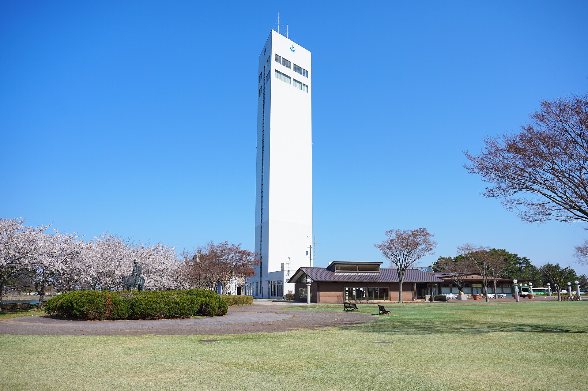

心と体を、
自然の中で整える。秋田県有数の低温、高温サウナ完備
広大な天王グリーンランドで、四季を感じる外気浴を。日替わりの和洋大浴場と、気分で選べる低温、高温サウナが、あなたを深いリラックスに誘います。日常を忘れ、至極の一時を。
広大な天王グリーンランドで、四季を感じる外気浴を。日替わりの和洋大浴場と、気分で選べる低温、高温サウナが、あなたを深いリラックスに誘います。日常を忘れ、至極の一時を。

天王グリーンランド「道の駅てんのう」は、高さ約60mのスカイタワー天王をはじめ、広大な芝生広場や大型遊具、地元の美味しいものが集まる直売所「食菜館くらら」などを擁する、県内屈指の巨大アミューズメントパークです。ご家族や友人とたっぷり遊んで、美味しいグルメを堪能した旅の締めくくりは、敷地内の「天王温泉くらら」へ。 ここには、豊かな自然に囲まれながら、心も体も100%リセットできる特別な時間が待っています。

まずはランドマーク「スカイタワー天王」へ。男鹿半島や八郎潟残存湖、日本海まで見渡せる360度大パノラマです。
01緑いっぱいの芝生広場や、子どもたちに大人気の大型遊具エリアへ。ピクニック気分で、心地よい秋田の風を感じてリフレッシュ。
02直売所で新鮮な地場野菜や果物をチェック！小腹が空いたら、秋田名物や絶品サ飯（サウナ飯）をレストランで堪能します。
031日のフィナーレは天王温泉くららへ。高温・低温の選べるサウナと、広々とした外気浴スペースが、最高の癒やしを約束します。
04週末のドライブに、旅の締めくくりに。アクセスをチェックして至極のサ活へ出かけましょう。